Legacy fireworks: flight depth and finer bursts
Baseline 2026-10-03.4 / upgraded 2026-10-04.1. Seed 20261004; common fixed-clock scene origin 120 seconds; reduced flashes on, reduced motion off and sound off. Native desktop pairs use the same Intel gen-12lp non-fallback WebGPU adapter. Portrait comparisons deliberately show different backends and are labelled separately.
Source, CI and qualification: main promotion receipt. These are deterministic rendered checkpoints, not frame-rate, real-device or thermal measurements. Complete motion recordings and all phase captures are retained in the CI artifacts and local test-results folders recorded in the receipt.
Matched native WebGPU before / after
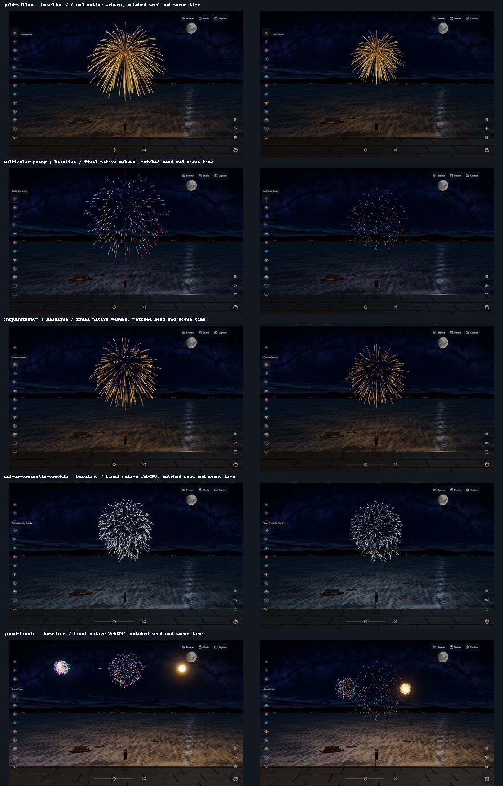
Group 1; click for full resolution.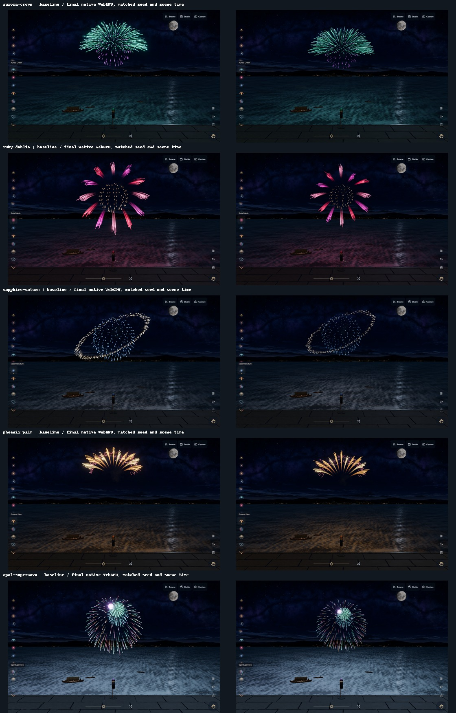
Group 2; click for full resolution.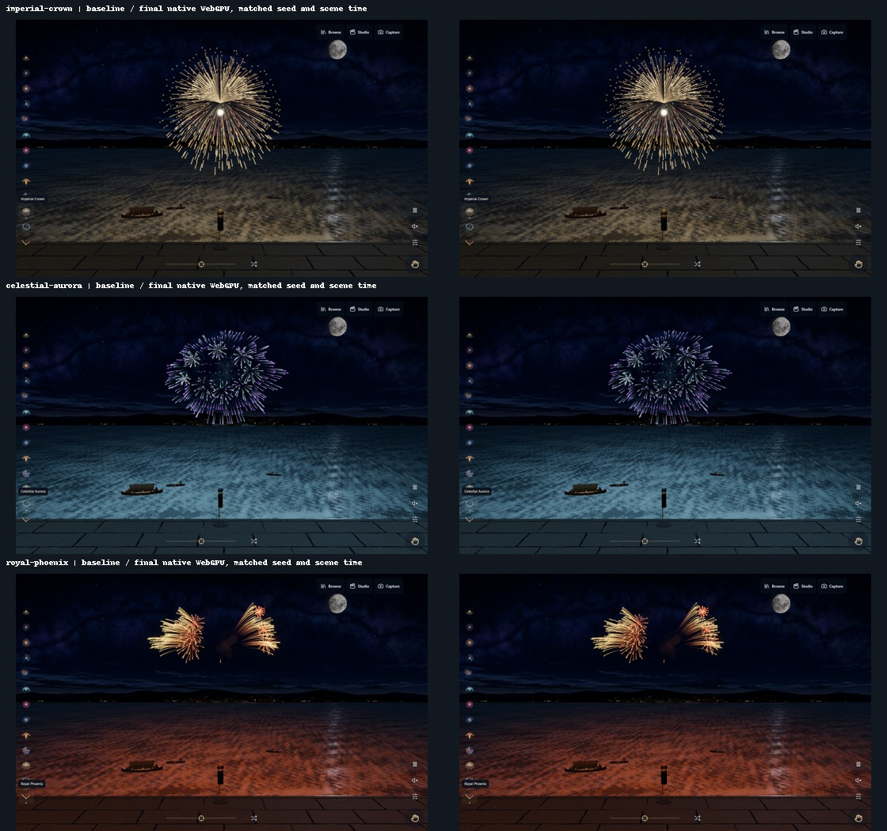
Group 3; click for full resolution.Matched software WebGL before / after
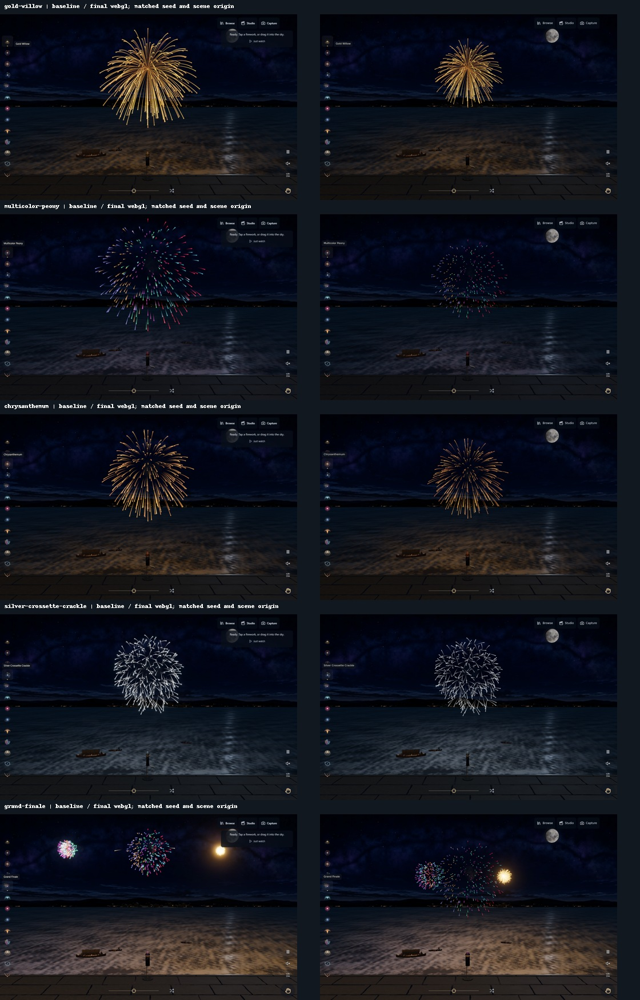
Group 1; click for full resolution.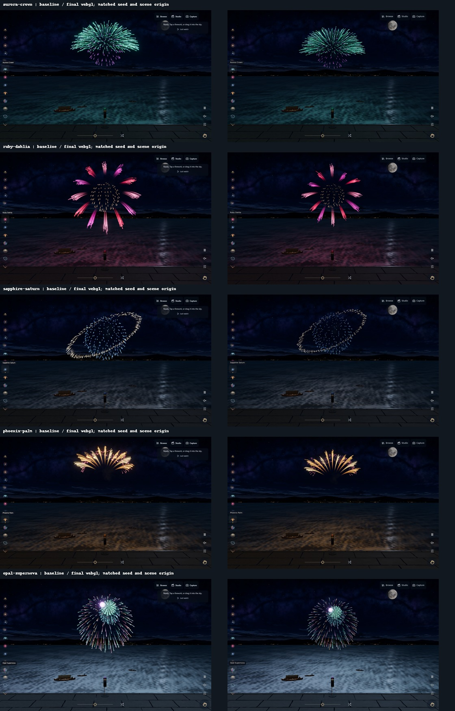
Group 2; click for full resolution.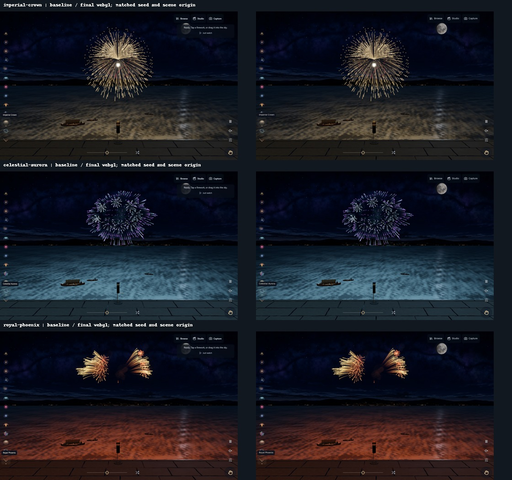
Group 3; click for full resolution.Matched Canvas before / after
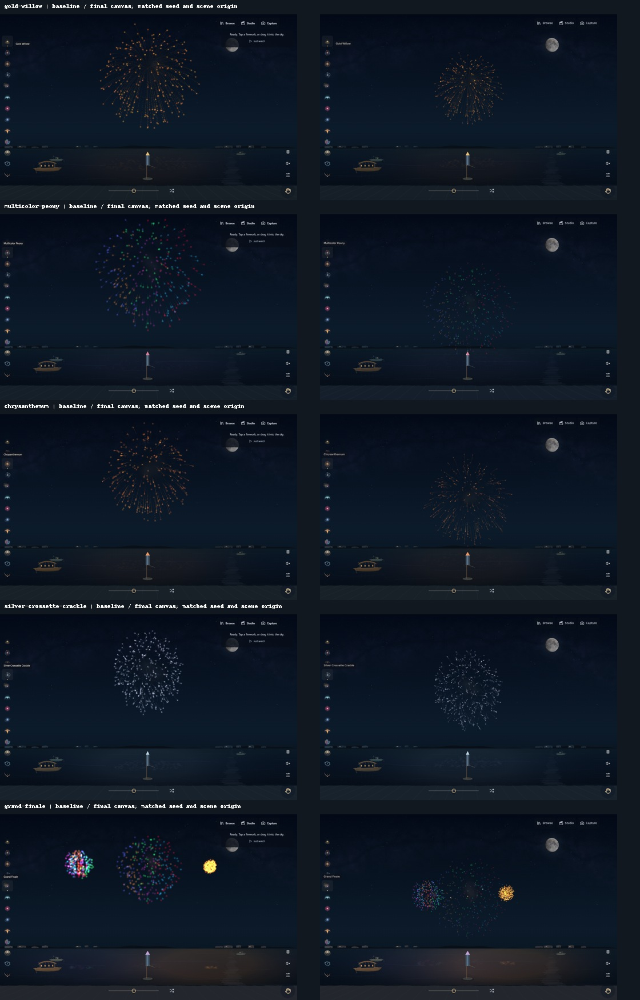
Group 1; click for full resolution.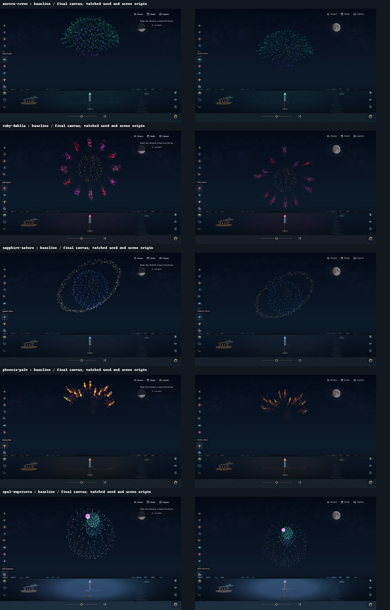
Group 2; click for full resolution.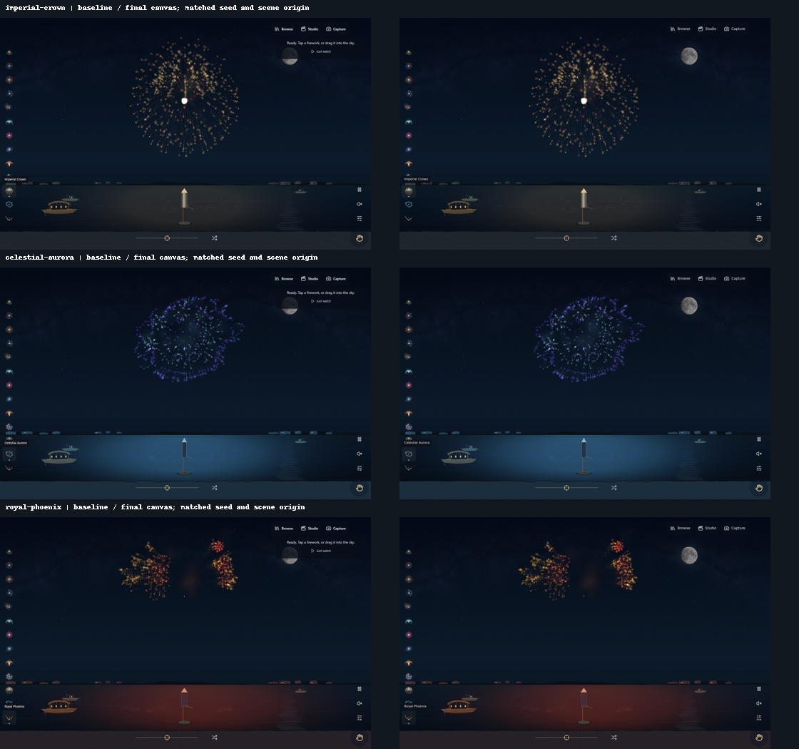
Group 3; click for full resolution.Ultra portrait: final WebGL / Canvas
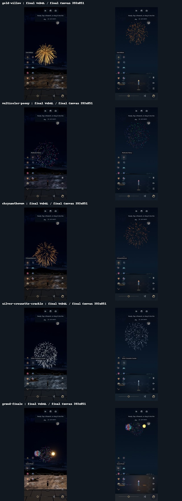
Group 1; click for full resolution.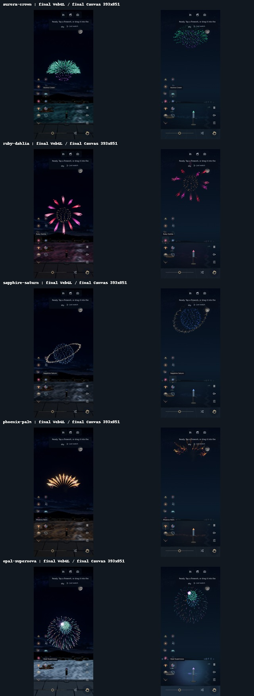
Group 2; click for full resolution.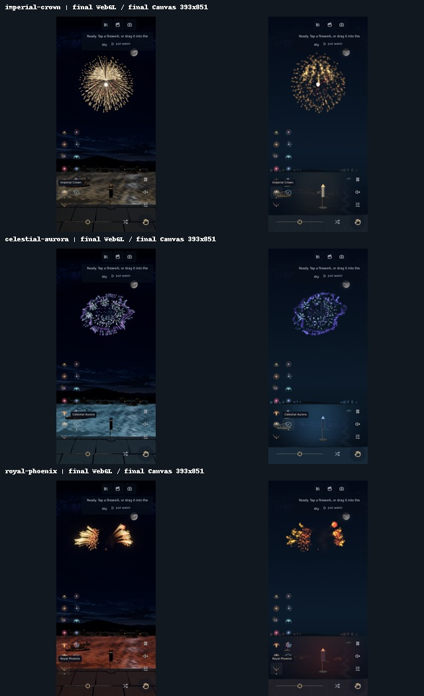
Group 3; click for full resolution.Low portrait: final WebGL / Canvas
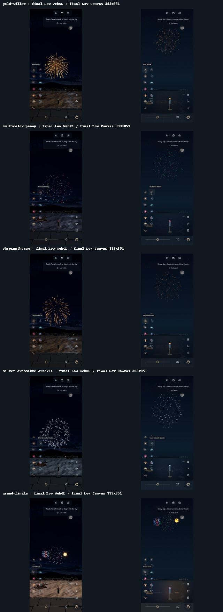
Group 1; click for full resolution.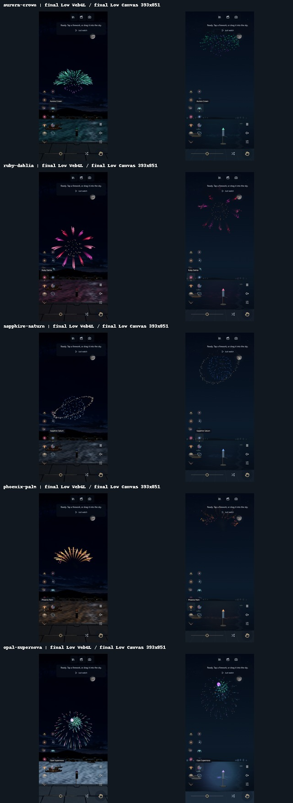
Group 2; click for full resolution.